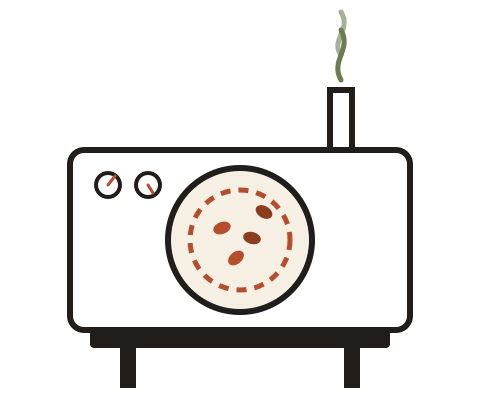

Small batch, since 2019
We roast in twelve kilo batches, and taste every single one.
Marrow & Ember is a one room roastery on the edge of town. Green beans arrive by the sack, and leave as something you would drive back for. No blends made to hit a price point, only roasts made to taste right.
How it works
One drum, one roaster, one decision at a time
Every batch is roasted by hand on a refurbished drum machine. There is no automated profile to fall back on, so the roaster listens for the crack, watches the colour, and pulls the batch the moment it tastes the way it should.
12kg
per batch
48hr
rest before grinding
6
origins in rotation
3
days a week we roast
